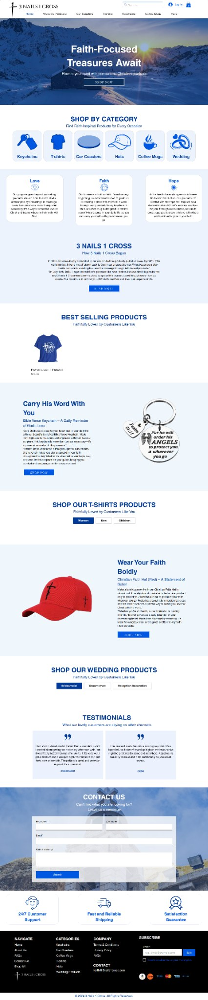

One Love Beauty
WixA professional beauty and hair recovery website that feels calm, trusted, and easy to book from.

Ecommerce Website
An ecommerce website for faith-focused products with categories, product sections, story, testimonials, and contact.
An ecommerce website for faith-focused products with categories, product sections, story, testimonials, and contact.
The store is easier to browse and gives shoppers more reasons to trust and buy.
Businesses that want a clearer online presence, better structure, stronger trust sections and a cleaner path from visitor interest to action.
More work
Click through more examples from the portfolio.
A professional beauty and hair recovery website that feels calm, trusted, and easy to book from.

A polished mental health website that presents services, authority, and appointment options clearly.

A property management website that speaks directly to rental owners and shows a simple consultation path.
Start simple
I will look at what is unclear and suggest the clearest next step.